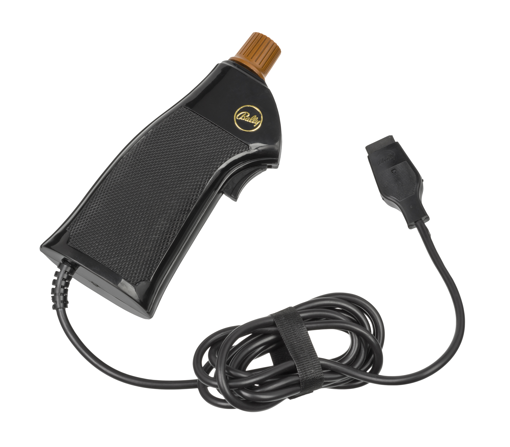
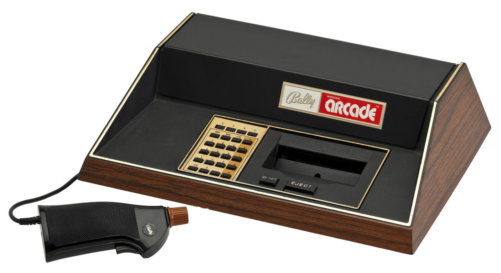
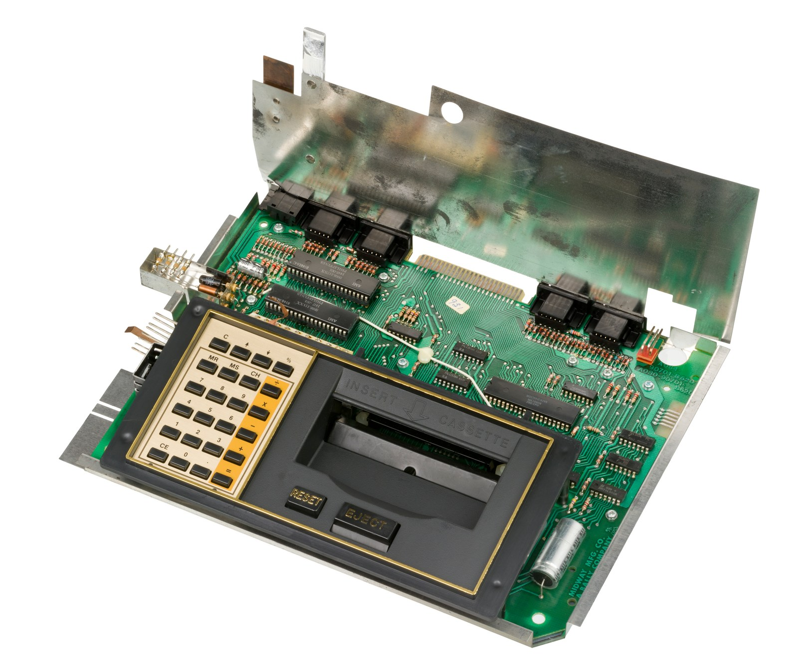

Bally Professional Arcade / Astrocade
A console you program by typing into the pixels — Bally BASIC lived inside the video RAM

Overview
The Bally Professional Arcade (announced October 1977 as the "Bally Home Library Computer", released to stores April 1978 at $299) is a Zilog Z80-powered home video game console and simple computer, designed by Dave Nutting Associates for Midway, Bally's video game division. It was re-released by third parties as the Bally Computer System (1981) and the Astrocade (1982–85). The system has 4 KB RAM, 8 KB ROM, a 160×102 display with color registers (4 colors from a 256-color palette, expandable to 8 via a line-split trick), and built-in games plus a Calculator and a Scribbling doodle program.
The controller is a pistol-style grip with a trigger switch on the front, a small 8-way joystick on top, and a potentiometer in the shaft so the stick rotates to double as a paddle — three input modes in one hand. The console front has a 24-key hex keypad. The defining oddity, though, is Bally BASIC (by Jamie Fenton, an expanded version of Li-Chen Wang's Palo Alto Tiny BASIC, first published 1978): because the 160×102 display consumed almost all RAM, the interpreter stored BASIC program code bit-interleaved inside the video RAM itself — even bits for program, odd bits for display, rendered invisible by remapping two of the four colors to the same white. This squeezed out 1,760 bytes of BASIC RAM. Programs were entered on the calculator keypad through a plastic overlay with four colored shift keys.
Deep dive
The display at 160×102 with 2 bits per pixel consumed 4,080 bytes — virtually all of the machine's 4 KB of RAM. To fit a BASIC interpreter at all, Fenton interleaved every bit of the program with the display: BASIC used the even-numbered bits, the display used the odd-numbered bits, and the interpreter read two bytes, dropped every odd bit, and reassembled one byte of code. The program was hidden in plain sight by setting two of the color register values to the same white, so the presence or absence of a program bit had no visible effect. Scavenging a few display lines (88 instead of 102) yielded 1,760 bytes for BASIC programs. The screen you watched was also the memory your program occupied — an extreme version of "the program lives in the display."
Programs were entered on the 24-key hex keypad with a plastic overlay mapping letters, symbols, and BASIC keywords, selected through four colored shift keys: typing WORD (gold shift) then "+" produced GOTO. A simple line editor was supported — after typing a line number, each press of the PAUSE key loaded the next character from memory. The machine was designed to be programmed the way you'd use a calculator, on a TV, in a living room. The keypad layout and bit-interleaved memory are the museum's strangest programming ritual outside the TI-59's magnetic cards.
The controller is a pistol grip with a trigger switch on the front, a small 4-switch/8-way joystick on top, and a shaft connected to a potentiometer so the stick rotates to double as a paddle controller. This hybrid — trigger, joystick, and rotating paddle in one hand — is the same "one grip, several grammars" idea as the Fairchild Channel F's twist-grip (both from 1976–78), but executed with a trigger plus a rotary joystick rather than a twist cap. Bally BASIC even exposes the inputs as functions: JX()/JY() for the joystick, KN() for the knob, TR() for the trigger.
The museum's RCA Studio II (1977) has keypads on the console; the Coleco Telstar Arcade (1977) is a triangular body-as-controller; the Fairchild Channel F (1976) has a twist-grip. Bally adds a programmable console whose code is physically interleaved with its own display — no other exhibit makes the program memory and the picture the same RAM. The ZGRASS expansion (with its full keyboard and GRASS language, later released as the Datamax UV-1) completes the story of a console that tried to become a computer.
Team & pioneers
- Dave Nutting Associates. Designed the Bally system for Midway; led by Dave Nutting, designer of Bally arcade games like Wizard of Wor.
- Jamie Fenton. Wrote Bally BASIC (1978), expanded from Li-Chen Wang's Palo Alto Tiny BASIC; later co-authored GRASS for ZGRASS.
- Midway / Bally Manufacturing. Bally's video game division; announced and first released the system.
- Astrovision. Third-party company that re-released the system as the Astrocade (1982–85).
Media

